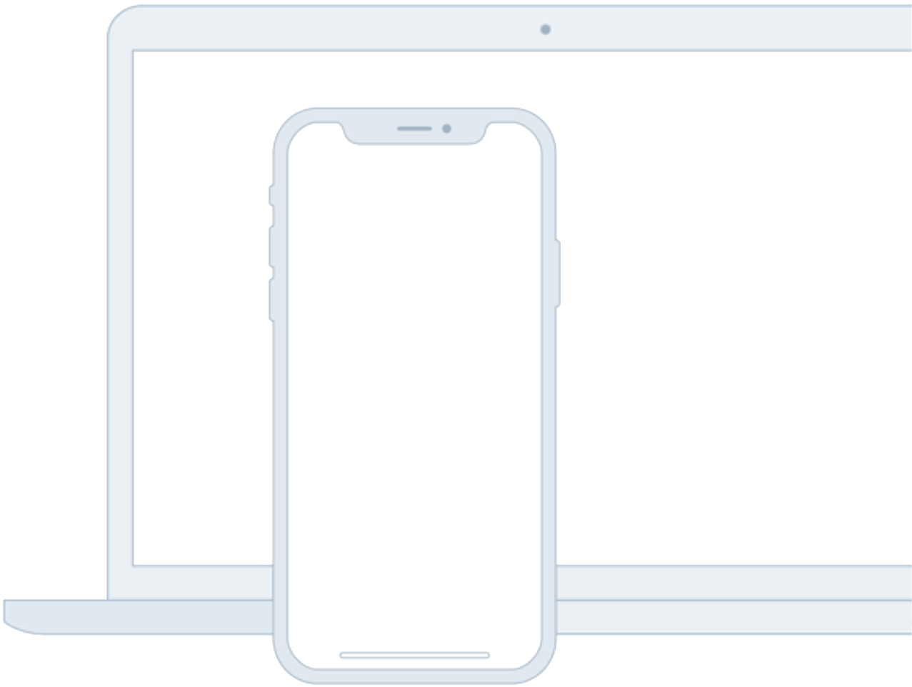

Tagline
Source helps
Source helps
creators do more
of what they love
A device that enables collaboration will lesson the chance of work having to be completely redone.

Feature One
In such a test, the user performs realistic tasa by interacting with the paper prototype.
First link >Feature Two
Three techniques of paper protoyping used for usability testing are comps, wireframes
Second link >Feature Three
Rapid prototyping involves a group of designers who each create a paper prototype
Third link >Feature Four
Functionality is similarly unimportant, but in this case are closer to the final product
Fourth link >